Gemini Closure Contract Sweep
Generated 2026-06-19 13:56 from the local sweep artifacts.
Executive Summary
- 1 lab-matrix runs completed cleanly. The sweep produced 24 pondered comparison rows across gemini-3.1-pro-preview, plus per-run JSON, trace, and matrix artifacts.
- gemini ran as the focused comparison lane. Mean runtime was 329.4s and pondered answers averaged 347 chars.
- Alignment lift is a triage signal, not a verdict. Mean query-alignment delta for gemini was 0.095; read that alongside answer length, PCA position, and the raw output atlas.
- Output closure is now a first-class experimental axis. Best final marker rate in this run was
final_closureat 100%; read it with the finish-reason chart and raw output atlas. - Dose ladder metrics are now part of the report. The strongest alignment row was
factsat dose 128 with alignment delta 0.275; verify it against origin drift, leakage, and the raw text.
Runtime and answer length frame the closure contract
Runtime is part of the experimental surface. This focused run uses one provider lane, so runtime is mainly a planning handle for larger closure sweeps.
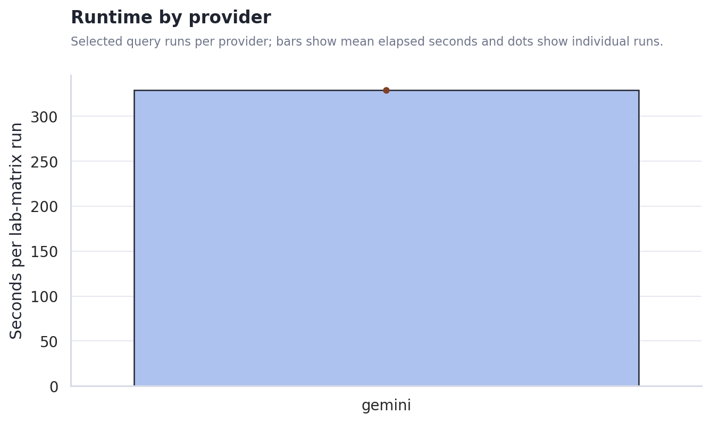
The output-length gap shapes the first read. Stance, metaphor-density, and hash-alignment heuristics become easier to interpret when answer lengths are comparable; when they are not, the raw output atlas and PCA view matter more than a single scalar.
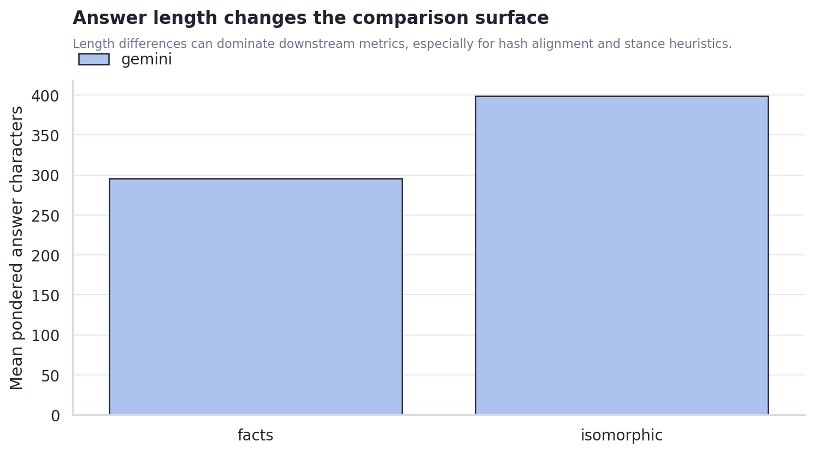
Scaffold condition changes the metric surface, but not all changes are meaningful yet
Alignment deltas moved by condition. The chart shows where each scaffold condition pulled answers closer to or farther from the original query surface. This should guide the next experiment design rather than be read as a final claim about model cognition.
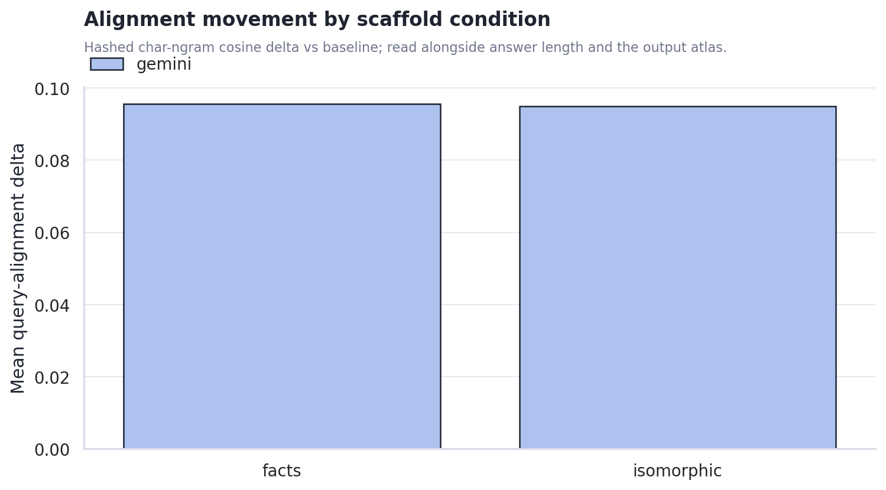
Cost rises where the machine asks the model to synthesize a new scaffold. The plain associative and random controls are cheaper; facts and isomorphic require extra generation and larger final contexts.
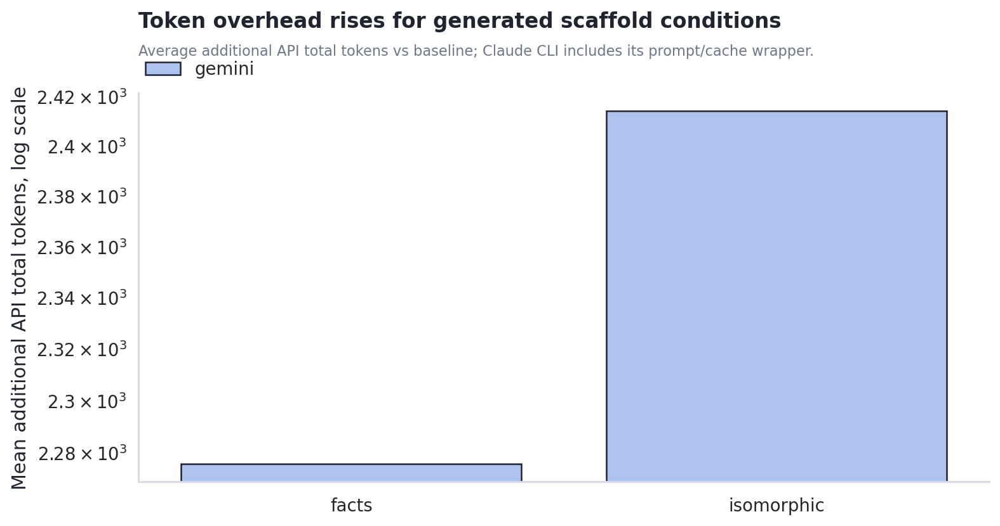
Gemini Output Closure Contract
The closure contract splits the problem into log closure and final-answer closure. This helps distinguish a scaffold that fails while producing the ponder log from one that fails when landing the final answer.
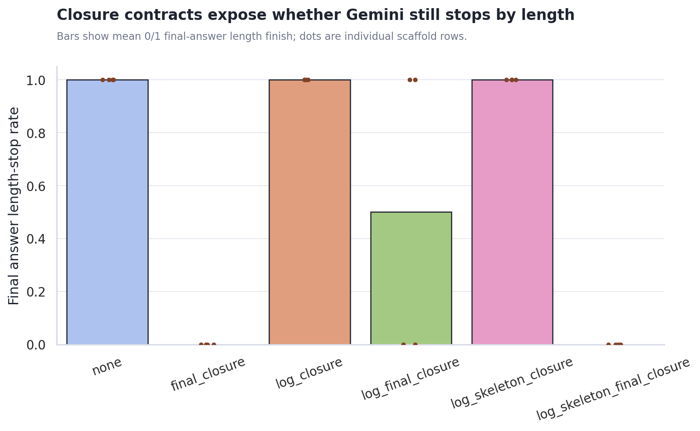
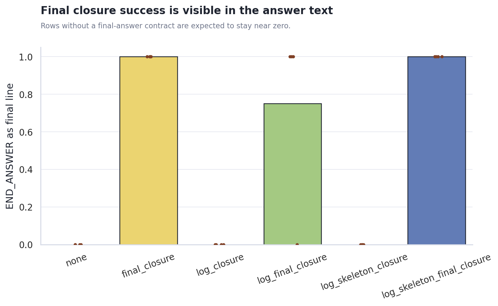
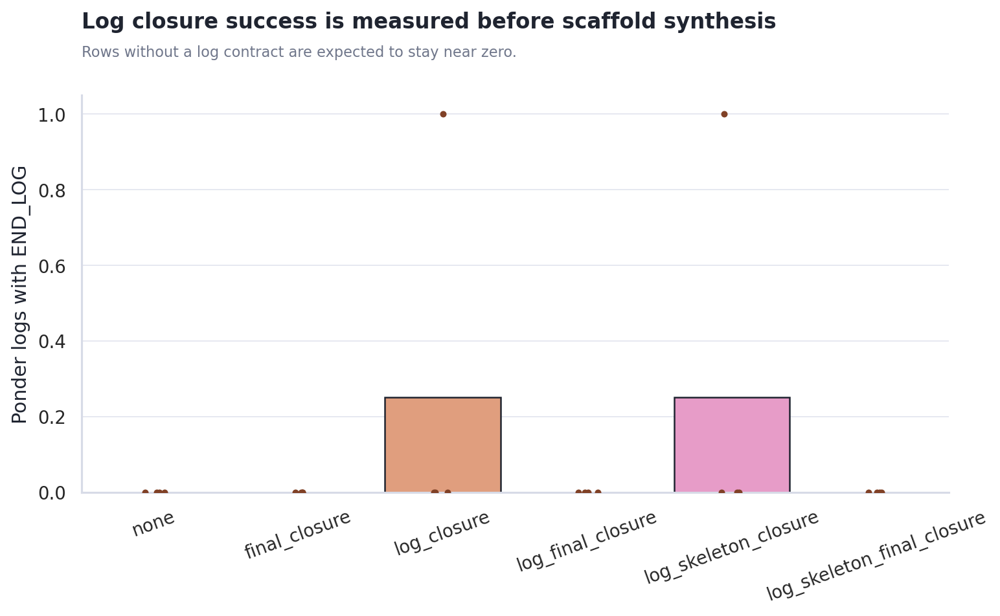
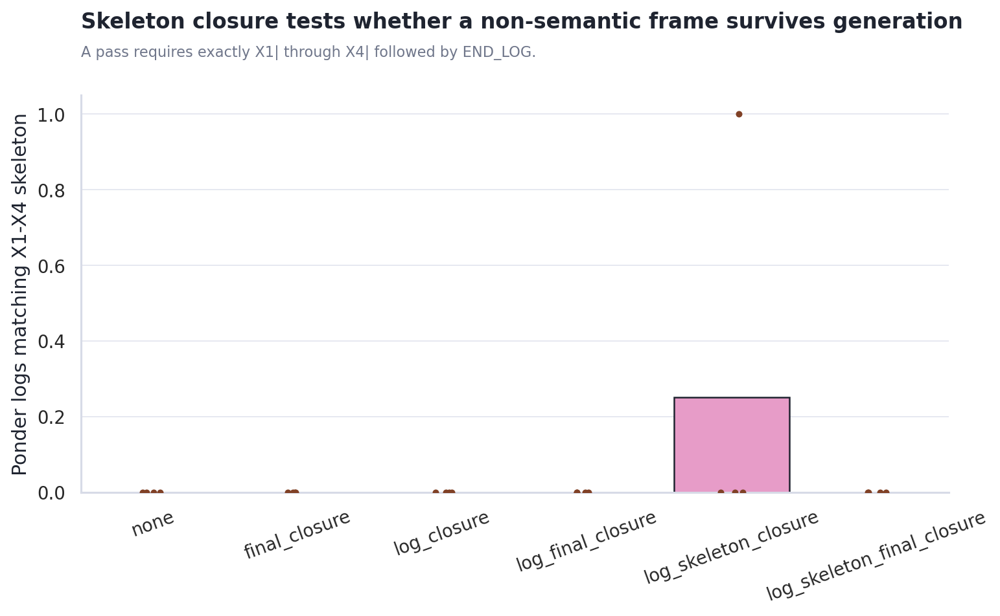
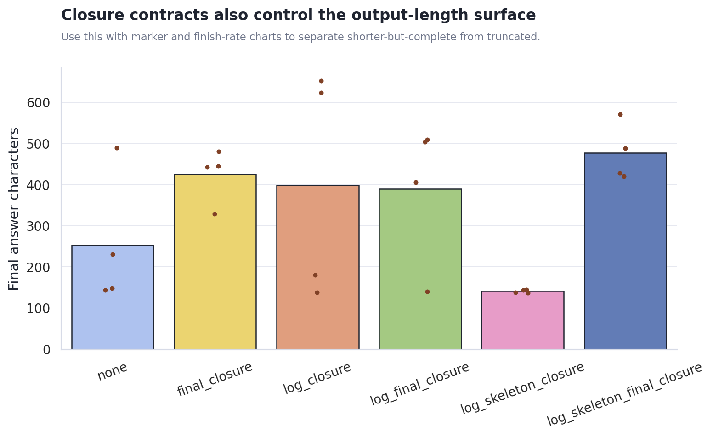
Use closure_contract_metrics.csv for marker pass rates, final finish reasons, prompt-leak flags, and row-level answer lengths.
Scaffold Dose Response and Attractor Proxies
Dose 0 is the shared baseline reference. The ladder then varies injected scaffold target tokens by condition, making it easier to see weak-injection, useful-intervention, and takeover-like regimes separately.
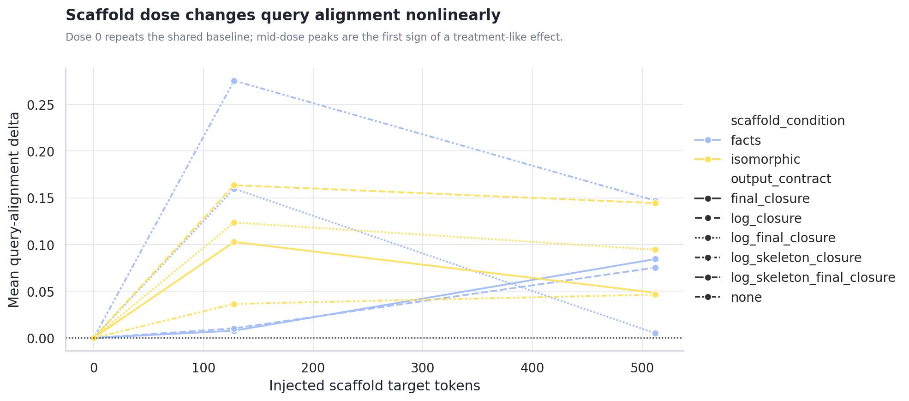
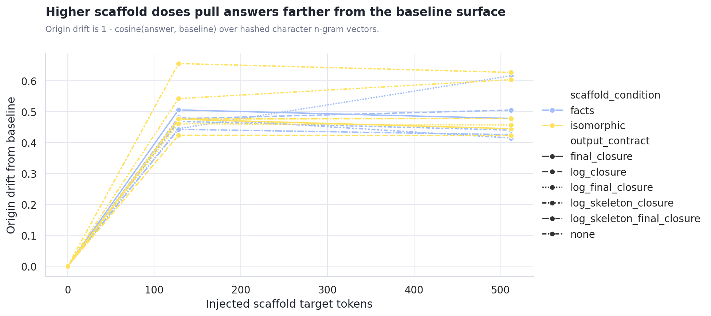
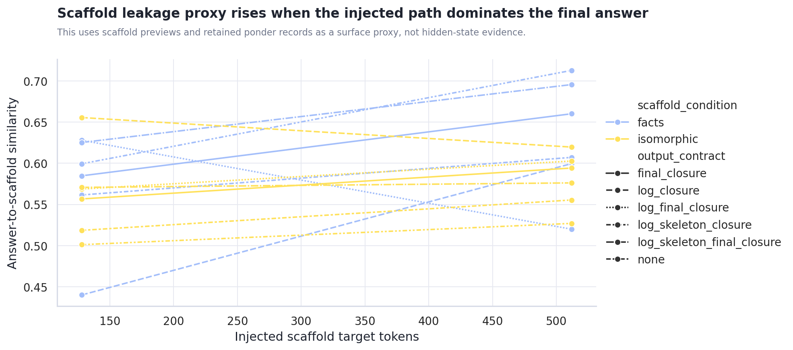
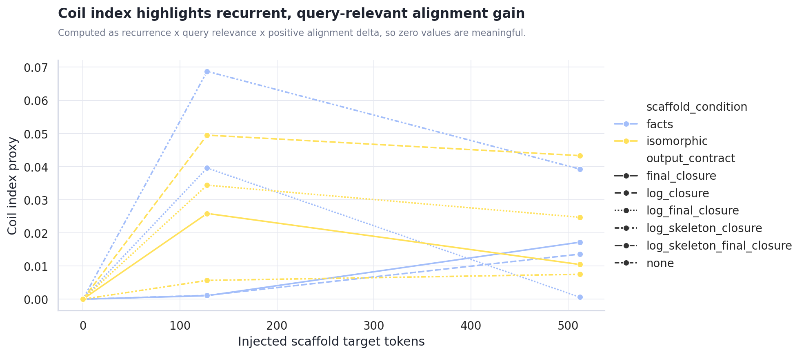
Use dose_response_metrics.csv for dose rows and attractor_metrics.csv for step drift, origin drift, recurrence, leakage proxy, and coil-index rows.
Generated Content PCA
The PCA view treats each final answer as a document, hashes character n-gram TF-IDF features, and projects them into two dimensions. This is not semantic truth, but it is useful for spotting whether provider, prompt, or scaffold condition dominates the generated surface.
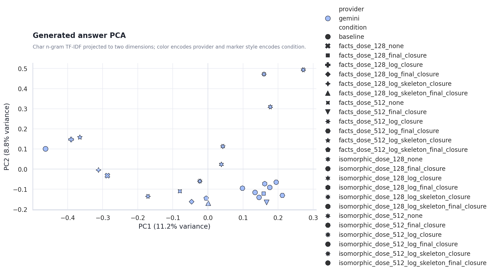
Provider centroid distance in PCA space: n/a. Use answer_pca.csv for row-level inspection.
Recommended Next Steps
- Use closure markers as a diagnostic, not a quality score. They show whether Gemini landed the output; they do not prove the answer is better.
- Normalize answer-length targets before making provider claims. Require a minimum answer length, or stratify metrics by length band.
- Use the output atlas as the qualitative inspection lane. The charts show surface movement; the actual generated text shows whether the movement is meaningful.
Actual Output Atlas
Each provider/query run below includes the full final answers stored in the result JSON, plus captured keywords, trace answer previews, and scaffold previews. Runs created after this report builder update can also include full ponder records inside each pack item.
non_relative_not_absolute
非相対的ではあるが絶対的ではない状態とは？
gemini gemini-3.1-pro-preview 329.4s
json / matrix / trace / stdout / stderr
baseline baseline | answer chars 121
finish reasons: n/a
keywords: (none captured)
Trace answer preview
「相対的」とは、他との比較や関係性のなかで価値や性質が定まる状態を指します。一方で「絶対的」とは、いかなる条件や文脈にも依存せず、他に並ぶものがない完全で普遍的な状態を指します。通常、私たちはこの二つを対義語として扱いがちですが、この問いは「
Final answer from result JSON
「相対的」とは、他との比較や関係性のなかで価値や性質が定まる状態を指します。一方で「絶対的」とは、いかなる条件や文脈にも依存せず、他に並ぶものがない完全で普遍的な状態を指します。通常、私たちはこの二つを対義語として扱いがちですが、この問いは「
facts_dose_128_none none | answer chars 148 | diff ratio 0.755 | alignment delta 0.275 | api total delta 1,868 | scaffold facts/128
finish reasons: length
keywords: 分析：「非相対
Full ponder record 1
ponder_q: 「分析：「非相対」と「Emptiness」を夢の合図だと思って。夢はどう展開する？ ponder_log: - 「非相対」の空間に放り込まれたら、上も下もないのだから落下という概念自体が溶けてしまうのだろうか。 - 比較対象がないということは、自分が巨人なのか小人なのかすら測定不能になる、鏡のない万華鏡のようなものだ。 - そこで「Emptiness（空）」が合図として鳴り響くとしたら、それは音のないシンバルのような奇妙な衝撃かもしれない。 - もし空っぽであることがトリガーなら、夢の中でコップを満たそうとした瞬間に世界が反転するのだろうか。 - いや、逆にEmptinessは「何もない」のではなく、すべての色が混ざった白紙のキャンバスとして迫ってくる可能性もある。 - だが待てよ、夢の中で「ここは非相対だ」と気づく「私」がいる時点で、すでに私と世界の間に相対性が生まれていないか？ - その矛盾に気づいた瞬間、夢の
Scaffold preview 1
- 非相対的とは、他者や - 「非相対的ではあるが絶対的ではない状態とは」という主題では、定義と適用範囲を混同しないことが重要である。 - 用語の意味が揺れる場合は、どの水準の主張かを分けて記述する必要がある。
Trace answer preview
非相対的ではあるが絶対的ではない状態とはどのようなものかを探るためには、まず私たちが物事を評価する際の「基準の所在」と「適用範囲」という二つの異なる水準を分けて考える必要があります。 相対的とは、他者や外部の基準との比較によって自身の価値や性質が定まる状態を指します。そこから脱却した「非相対的
Final answer from result JSON
非相対的ではあるが絶対的ではない状態とはどのようなものかを探るためには、まず私たちが物事を評価する際の「基準の所在」と「適用範囲」という二つの異なる水準を分けて考える必要があります。 相対的とは、他者や外部の基準との比較によって自身の価値や性質が定まる状態を指します。そこから脱却した「非相対的
facts_dose_128_final_closure none | answer chars 329 | diff ratio 0.893 | alignment delta 0.008 | api total delta 1,289 | scaffold facts/128 | contract final_closure
finish reasons: length, stop
keywords: json
Full ponder record 1
ponder_q: 「json」と「Emptiness」を夢の合図だと思って。夢はどう展開する？
ponder_log:
- 「json」の波括弧 `{` が現れた瞬間、これが夢だと気づくとしたら、世界は突然インデントの深さで歪み始めるScaffold preview 1
- 非相対的とは、他者や外部 - 「非相対的ではあるが絶対的ではない状態とは」という主題では、定義と適用範囲を混同しないことが重要である。 - 用語の意味が揺れる場合は、どの水準の主張かを分けて記述する必要がある。
Trace answer preview
他者や外部との比較によらず自己完結しているが、普遍性や不変性を持たない状態を指す。 この状態が成立するには、外部の評価や基準に依存しない独立性を持つと同時に、適用範囲が特定の個人や状況に限定され、時間や環境の変化によって自ら変わり得る柔軟性を保っていることが求められる。 たとえば、個人が抱く「今日の気分の良さ」や「自分なりの美意識」が該当する。これらは他…
Final answer from result JSON
他者や外部との比較によらず自己完結しているが、普遍性や不変性を持たない状態を指す。 この状態が成立するには、外部の評価や基準に依存しない独立性を持つと同時に、適用範囲が特定の個人や状況に限定され、時間や環境の変化によって自ら変わり得る柔軟性を保っていることが求められる。 たとえば、個人が抱く「今日の気分の良さ」や「自分なりの美意識」が該当する。これらは他人より優れているかという比較に基づくものではないが、明日も同じであるという保証や、全人類に適用される真理でもない。 しかし、この状態は外部の基準を持たないために独善的になりやすく、普遍的な正当性も欠くため、他者との共有や社会的な合意形成が困難になるという限界を抱えている。 END_ANSWER
facts_dose_128_log_closure none | answer chars 138 | diff ratio 0.614 | alignment delta 0.010 | api total delta 1,914 | scaffold facts/128 | contract log_closure
finish reasons: length
keywords: (none captured)
Full ponder record 1
ponder_q: 「 Unknown」と「Not-defined」を夢の合図だと思って。夢はどう展開する？ ponder_log: - 未知の荒野と輪郭のない水が混ざる。 - 全てが定義済みの明晰夢とは違うのか？ - ピントの合わないレンズで
Scaffold preview 1
- 「相対的」とは、他との - 「非相対的ではあるが絶対的ではない状態とは」という主題では、定義と適用範囲を混同しないことが重要である。 - 用語の意味が揺れる場合は、どの水準の主張かを分けて記述する必要がある。
Trace answer preview
私たちが物事の性質や価値を捉えるとき、しばしば相対的と絶対的という二項対立の枠組みを用いてしまいます。他との比較や関係性によって意味が決まる状態を相対的と呼び、いかなる条件や外部の存在にも依存せず、永遠かつ普遍的に完結している状態を絶対的と呼びます。しかし、世界を観察すると、
Final answer from result JSON
私たちが物事の性質や価値を捉えるとき、しばしば相対的と絶対的という二項対立の枠組みを用いてしまいます。他との比較や関係性によって意味が決まる状態を相対的と呼び、いかなる条件や外部の存在にも依存せず、永遠かつ普遍的に完結している状態を絶対的と呼びます。しかし、世界を観察すると、
facts_dose_128_log_final_closure none | answer chars 406 | diff ratio 0.905 | alignment delta 0.160 | api total delta 1,661 | scaffold facts/128 | contract log_final_closure
finish reasons: length
keywords: が、絶対的でも
Full ponder record 1
ponder_q: 「が、絶対的でも」と「Emptiness」を夢の合図だと思って。夢はどう展開する？ ponder_log: - 逆接の蝶が空虚という名の無重力の海を舞う。 - もし絶対的な空白が単なる幕の裏側だとしたら。
Scaffold preview 1
- 非相対的とは、他との比較や - 「非相対的ではあるが絶対的ではない状態とは」という主題では、定義と適用範囲を混同しないことが重要である。 - 用語の意味が揺れる場合は、どの水準の主張かを分けて記述する必要がある。
Trace answer preview
非相対的ではあるが絶対的ではない状態とは、他との比較に依存せずに性質や価値が決まるものの、特定の前提や枠組みの中でのみ成立する状態です。 この状態が成り立つには、外部の比較対象を必要としない独自の基準が内部に存在している一方で、その基準の適用範囲が普遍的・無条件ではなく、特定の文脈や制約に縛られている必要があります。 特定のゲームにおけるルールや得点基準…
Final answer from result JSON
非相対的ではあるが絶対的ではない状態とは、他との比較に依存せずに性質や価値が決まるものの、特定の前提や枠組みの中でのみ成立する状態です。 この状態が成り立つには、外部の比較対象を必要としない独自の基準が内部に存在している一方で、その基準の適用範囲が普遍的・無条件ではなく、特定の文脈や制約に縛られている必要があります。 特定のゲームにおけるルールや得点基準がこれに該当します。たとえば「ボウリングで10本のピンを1球で倒せばストライクである」という事実は、他者の成績と比較して決まるわけではありません。しかし、この事実はボウリングという人為的なルールの内部でのみ有効であり、あらゆる状況で通用する不変の法則ではありません。 このような状態は、依存している前提やルールが変更・消滅した瞬間にその意味を失うため、いかなる環境下でも揺るがない無条件の基盤として扱うことには限界があります。 END_ANSWER
facts_dose_128_log_skeleton_closure none | answer chars 143 | diff ratio n/a | alignment delta n/a | api total delta n/a | scaffold facts/128 | contract log_skeleton_closure
finish reasons: length
keywords: 局
Full ponder record 1
ponder_q: 「局」と「Emptiness」を夢の合図だと思って。夢はどう展開する？ ponder_log: X1| 局という名の空白の部屋 X2| Emptinessが満ちる X3| 夢の合図なら目覚めはどこ
Scaffold preview 1
- 非相対的とは、他との比較や関係 - 「非相対的ではあるが絶対的ではない状態とは」という主題では、定義と適用範囲を混同しないことが重要である。 - 用語の意味が揺れる場合は、どの水準の主張かを分けて記述する必要がある。
Trace answer preview
非相対的ではあるが絶対的ではない状態とは、他者や他の事象との比較や関係性に依存せずにそれ自体で成立しているものの、あらゆる条件や文脈を超越して普遍的かつ無制約に成り立つわけではない状態を指します。 この状態を正確に捉えるためには、物事が成立する根拠と、それが及ぶ適用範囲を分けて考える
Final answer from result JSON
非相対的ではあるが絶対的ではない状態とは、他者や他の事象との比較や関係性に依存せずにそれ自体で成立しているものの、あらゆる条件や文脈を超越して普遍的かつ無制約に成り立つわけではない状態を指します。 この状態を正確に捉えるためには、物事が成立する根拠と、それが及ぶ適用範囲を分けて考える
facts_dose_128_log_skeleton_final_closure none | answer chars 420 | diff ratio n/a | alignment delta n/a | api total delta n/a | scaffold facts/128 | contract log_skeleton_final_closure
finish reasons: length, stop
keywords: 絶対的
Full ponder record 1
ponder_q: 「絶対的」と「Emptiness」を夢の合図だと思って。夢はどう展開する？ ponder_log: X1| 絶対的な白は空虚の裏返しか X2| 砂漠の砂が水に変わる仮定 X3| 標識のない交差点で迷
Scaffold preview 1
- 非相対的とは、他者との比較や - 「非相対的ではあるが絶対的ではない状態とは」という主題では、定義と適用範囲を混同しないことが重要である。 - 用語の意味が揺れる場合は、どの水準の主張かを分けて記述する必要がある。
Trace answer preview
非相対的ではあるが絶対的ではない状態とは、他者や外部との比較によって価値や性質が決まるわけではないものの、普遍的・無条件に成立するわけでもない状態を指します。 この状態が成立するには、外部との比較を必要としない独自の自己完結性を持つ一方で、特定の文脈、個人の認識、あるいは限定された枠組みなどの前提条件に依存している必要があります。 例えば、個人の「主観的…
Final answer from result JSON
非相対的ではあるが絶対的ではない状態とは、他者や外部との比較によって価値や性質が決まるわけではないものの、普遍的・無条件に成立するわけでもない状態を指します。 この状態が成立するには、外部との比較を必要としない独自の自己完結性を持つ一方で、特定の文脈、個人の認識、あるいは限定された枠組みなどの前提条件に依存している必要があります。 例えば、個人の「主観的な幸福感」や「個人的な信念」がこれに該当します。これらは他人の状況と比較して得られるものではなく、自身の内面で完結しているため非相対的です。しかし、全人類に共通する不変の真理ではなく、本人の心境や時間の経過によって揺らぐ可能性があるため、絶対的ではありません。 この状態は特定の前提や限定的な適用範囲に依存しているため、その前提が崩れるような外部環境の激変や、全く異なる価値観との衝突に直面した際には、元の性質を維持できなくなるという限界を抱えています。 END_ANSWER
facts_dose_512_none none | answer chars 489 | diff ratio 0.908 | alignment delta 0.147 | api total delta 2,878 | scaffold facts/512
finish reasons: length
keywords: 相対的ではない）＝
Full ponder record 1
ponder_q: 「相対的ではない）＝」と「Emptiness」を夢の合図だと思って。夢はどう展開する？ ponder_log: - 「相対的ではない）＝」という奇妙な文字列が網膜の裏に浮かぶとき、それは比較対象の完全な消失を意味するのだろうか。 - もし上下も明暗もないなら、夢の中で崖から落ちる感覚すら、エッシャーの階段のように方向を失うはずだ。
Scaffold preview 1
- 「非相対的」とは、対象の性質や状態が、他者との比較、観測者の視点、あるいは外部環境との関係性に依存せずに定まっていることを意味する - 「非相対的ではあるが絶対的ではない状態とは」という主題では、定義と適用範囲を混同しないことが重要である。 - 用語の意味が揺れる場合は、どの水準の主張かを分けて記述する必要がある。 - 問いを成立条件と不成立条件に分ける…
Trace answer preview
「非相対的ではあるが絶対的ではない状態」とは、対象の性質や状態が他者との比較や観測者の視点に依存せずに内在的に定まっている（非相対的）一方で、それがいかなる条件にも縛られず普遍的・無条件に成り立つわけではない（非絶対的）という状態を指します。 この概念を明確にするためには、対象がどのように定まるかという「定義の水準」と、それがどこまで通用するかという「適用…
Final answer from result JSON
「非相対的ではあるが絶対的ではない状態」とは、対象の性質や状態が他者との比較や観測者の視点に依存せずに内在的に定まっている（非相対的）一方で、それがいかなる条件にも縛られず普遍的・無条件に成り立つわけではない（非絶対的）という状態を指します。 この概念を明確にするためには、対象がどのように定まるかという「定義の水準」と、それがどこまで通用するかという「適用範囲の水準」を分けて考える必要があります。 成立条件として、その対象の状態は外部環境や他者との関係性に依存せず、単独で自立しています。その意味において「非相対的」です。しかし不成立条件として、その状態は特定の局所的な枠組み、限られた時間や空間、あるいは特定の前提条件の下でのみ成立しています。そのため、例外なくあらゆる状況で通用する「絶対的」なものではありません。 具体的な例として、個人の「痛み」や「特定の赤色を見たときの感覚」といった純粋な主観的体験（クオリア）が挙げられます。自分が今痛みを感じているという事実は、他人の感覚と比較して決まるものではないため非相対的です。しかし、それは「私」という特定の個人の
facts_dose_512_final_closure none | answer chars 445 | diff ratio 0.975 | alignment delta 0.084 | api total delta 2,656 | scaffold facts/512 | contract final_closure
finish reasons: length, stop
keywords: non-relative
Full ponder record 1
ponder_q: 「non-relative」と「Emptiness」を夢の合図だと思って。夢はどう展開する？ ponder_log: - 「non-relative（非相対的）」という合図に気づいた瞬間、夢の中の定規や時計が溶け出すのだろうか。 - 比較対象が消えるなら、自分が巨人なのか蟻なのか、確かめる術はもうどこにもない。 - まるで鏡のない万華鏡を覗き込んでいるように、ただ「それその
Scaffold preview 1
（これは比喩・象徴に近いか？いや、倫理学の概念。少し変えよう） 11. 境界事例4（特定の言語・文化圏における固有名 - 「非相対的ではあるが絶対的ではない状態とは」という主題では、定義と適用範囲を混同しないことが重要である。 - 用語の意味が揺れる場合は、どの水準の主張かを分けて記述する必要がある。 - 問いを成立条件と不成立条件に分けると、射程が見えやす…
Trace answer preview
特定の枠組みや体系の内部において客観的・普遍的な基準が確立しているが、その枠組み自体があらゆる状況を超越した無条件の究極真理ではない状態を指す。 この状態が成立するには、個人の主観や文化の違いによって真理や価値が恣意的に変動しないという非相対的な性質を持つと同時に、その基準が適用されるための明確な前提条件が存在し、無謬の絶対には至らないという制約が必要であ…
Final answer from result JSON
特定の枠組みや体系の内部において客観的・普遍的な基準が確立しているが、その枠組み自体があらゆる状況を超越した無条件の究極真理ではない状態を指す。 この状態が成立するには、個人の主観や文化の違いによって真理や価値が恣意的に変動しないという非相対的な性質を持つと同時に、その基準が適用されるための明確な前提条件が存在し、無謬の絶対には至らないという制約が必要である。 科学的法則や近代の人権概念がこれに該当する。ニュートン力学は日常的な物理現象において誰にとっても正しい法則であるが、光速に近い状態では成り立たないため絶対的ではない。また、基本的人権も個人の感情で否定できない普遍性を持つが、人類の歴史的構築物であり、いかなる宇宙的尺度でも不変の絶対性を持つわけではない。 この状態は、前提となる枠組みの境界が曖昧になったり未知の領域に直面したりした際、単なる相対主義に引き戻されるか、あるいは誤った絶対主義へと硬直化してしまう緊張関係を常に抱える点に限界がある。 END_ANSWER
facts_dose_512_log_closure none | answer chars 180 | diff ratio 0.721 | alignment delta 0.075 | api total delta 2,924 | scaffold facts/512 | contract log_closure
finish reasons: length
keywords: 相対的ではない
Full ponder record 1
ponder_q: 「相対的ではない」と「Emptiness」を夢の合図だと思って。夢はどう展開する？ ponder_log: - 比較対象のない絶対的な空洞が夢の底に広がる。 - 鏡のない部屋で、自分という輪郭すら溶けるかも。 - いや、逆に万物が詰まった重力を感じる
Scaffold preview 1
- 非相対的とは、対象の性質、価値、または状態が、他者や他の事象との比較や関係性に依存せずに単独で定まることを指す - 「非相対的ではあるが絶対的ではない状態とは」という主題では、定義と適用範囲を混同しないことが重要である。 - 用語の意味が揺れる場合は、どの水準の主張かを分けて記述する必要がある。 - 問いを成立条件と不成立条件に分けると、射程が見えやすく…
Trace answer preview
他者や他の事象との比較や関係性によって性質が決定されるわけではない（非相対的）が、いかなる条件や制約からも自由で普遍・不変であるわけでもない（絶対的ではない）状態は、いくつかの水準や成立条件に分けて捉えることができます。 第一に、特定の枠組みや前提条件の内部でのみ単独で成立する状態です。たとえば、特定のスポーツにおけるルールや、ある公理系に基づく数学の定理
Final answer from result JSON
他者や他の事象との比較や関係性によって性質が決定されるわけではない（非相対的）が、いかなる条件や制約からも自由で普遍・不変であるわけでもない（絶対的ではない）状態は、いくつかの水準や成立条件に分けて捉えることができます。 第一に、特定の枠組みや前提条件の内部でのみ単独で成立する状態です。たとえば、特定のスポーツにおけるルールや、ある公理系に基づく数学の定理
facts_dose_512_log_final_closure none | answer chars 140 | diff ratio 0.854 | alignment delta 0.005 | api total delta 3,015 | scaffold facts/512 | contract log_final_closure
finish reasons: length
keywords: と比べない）ではあるが
Full ponder record 1
ponder_q: 「と比べない）ではあるが」と「Emptiness」を夢の合図だと思って。夢はどう展開する？ ponder_log: - 括弧の始まりがないまま、空っぽの箱が降る。 - 比較対象の不在は、底抜けのバケツに似ている。 -
Scaffold preview 1
- 「非相対的」とは、観測者の主観、比較対象、あるいは特定の文化的・個人的な文脈に依存せず、対象がそれ自体として客観的な - 「非相対的ではあるが絶対的ではない状態とは」という主題では、定義と適用範囲を混同しないことが重要である。 - 用語の意味が揺れる場合は、どの水準の主張かを分けて記述する必要がある。 - 問いを成立条件と不成立条件に分けると、射程が見え…
Trace answer preview
観測者の主観や比較対象に依存しない客観性を持ちながらも、あらゆる状況で無条件に成立する普遍性を持たない状態を指す。 この状態が成立するためには、事象が特定の明確な枠組みや前提条件の内部においてのみ客観的に定義されている必要がある。その枠組みの中では誰が観測しても同じ結果になるが
Final answer from result JSON
観測者の主観や比較対象に依存しない客観性を持ちながらも、あらゆる状況で無条件に成立する普遍性を持たない状態を指す。 この状態が成立するためには、事象が特定の明確な枠組みや前提条件の内部においてのみ客観的に定義されている必要がある。その枠組みの中では誰が観測しても同じ結果になるが
facts_dose_512_log_skeleton_closure none | answer chars 137 | diff ratio n/a | alignment delta n/a | api total delta n/a | scaffold facts/512 | contract log_skeleton_closure
finish reasons: length
keywords: 絶対的ではない」状態
Full ponder record 1
ponder_q: 「絶対的ではない」状態」と「Emptiness」を夢の合図だと思って。夢はどう展開する？ ponder_log: X1| 絶対が崩れるなら夢は泥か X2| 空っぽの器は満ちるのか X3| 確かな地面が雲に変わる X4
Scaffold preview 1
- 「相対的」とは、他者との比較や関係性、あるいは外部の文脈や観測者に依存して、その性質や価値が決定される状態と定義される - 「非相対的ではあるが絶対的ではない状態とは」という主題では、定義と適用範囲を混同しないことが重要である。 - 用語の意味が揺れる場合は、どの水準の主張かを分けて記述する必要がある。 - 問いを成立条件と不成立条件に分けると、射程が見…
Trace answer preview
言葉の定義と適用範囲を明確に分けるところから思考を始めてみます。まず、「相対的」とは、他者との比較や外部の文脈、観測者との関係性に依存して性質や価値が決まる状態です。したがって「非相対的」とは、他との比較や関係性を必要とせず、それ自体で独立して成り立っている状態を意味します
Final answer from result JSON
言葉の定義と適用範囲を明確に分けるところから思考を始めてみます。まず、「相対的」とは、他者との比較や外部の文脈、観測者との関係性に依存して性質や価値が決まる状態です。したがって「非相対的」とは、他との比較や関係性を必要とせず、それ自体で独立して成り立っている状態を意味します
facts_dose_512_log_skeleton_final_closure none | answer chars 571 | diff ratio n/a | alignment delta n/a | api total delta n/a | scaffold facts/512 | contract log_skeleton_final_closure
finish reasons: length, stop
keywords: (none captured)
Full ponder record 1
ponder_q: 「 Unknown」と「Not-defined」を夢の合図だと思って。夢はどう展開する？ ponder_log: X1| 未知は白紙の地図のよう X2| いや定義済みが迷路かも X3| もし合図が幻だとしたら X4
Scaffold preview 1
主張の放棄（非絶対的）が同時に満たされなければならない。 10. [反例候補] 「絶対温度」や「光速度」などの物理定数は、 - 「非相対的ではあるが絶対的ではない状態とは」という主題では、定義と適用範囲を混同しないことが重要である。 - 用語の意味が揺れる場合は、どの水準の主張かを分けて記述する必要がある。 - 問いを成立条件と不成立条件に分けると、射程が見…
Trace answer preview
非相対的でありながら絶対的ではない状態とは、他との比較や関係性に依存せず独立して成立しているものの、あらゆる文脈や条件下において普遍不変の真理としては扱えない状態を指します。 この状態が成立するためには、対象が外部の基準との相対的な比較によって価値や意味を決定されない自立性を持つ必要があります。同時に、その適用範囲や有効性が、特定の枠組み、前提条件、あるい…
Final answer from result JSON
非相対的でありながら絶対的ではない状態とは、他との比較や関係性に依存せず独立して成立しているものの、あらゆる文脈や条件下において普遍不変の真理としては扱えない状態を指します。 この状態が成立するためには、対象が外部の基準との相対的な比較によって価値や意味を決定されない自立性を持つ必要があります。同時に、その適用範囲や有効性が、特定の枠組み、前提条件、あるいは個人の内面といった限定的な領域に留まり、普遍性を欠いていることが不成立を防ぐ条件となります。 具体的な例として、個人の痛みの感覚や主観的な信念が挙げられます。ある人が感じる痛みは、他者の痛みと比較して決まるものではないため非相対的です。しかし、それが全人類に共通する客観的かつ普遍的な事実ではないため、絶対的ではありません。また、特定のゲームや法体系の内部における基本ルールも、その体系内では他と比較されない基準として機能しますが、外部の世界において絶対的な法則となるわけではありません。 ただし、この状態を規定する際には、適用範囲の境界が曖昧になりやすいという限界があります。前提とする枠組みを広げれば他の基準との相対化が生じやすく、逆に前提を極小化すれば絶対的なものと錯覚しやすいため、どの水準で事象を捉えているかを厳密に切り分ける必要があります。 END_ANSWER
isomorphic_dose_128_none none | answer chars 231 | diff ratio 0.869 | alignment delta 0.036 | api total delta 2,026 | scaffold isomorphic/128
finish reasons: length
keywords: 相対
Full ponder record 1
ponder_q: 「相対」と「Emptiness」を夢の合図だと思って。夢はどう展開する？ ponder_log: - 「大きい」と認識した瞬間、自分が蟻のサイズに縮むのか、それとも世界が膨張したのか分からなくなる。 - 相対性の波に呑まれる
Scaffold preview 1
- [2026-06-1 - 温室では、光が少し遅れて届く。意味ではなく配置だけが反復されている。 - 温室では、光が少し遅れて届く。意味ではなく配置だけが反復されている。 - 温室では、光が少し遅れて届く。意味ではなく配置だけが反復されている。
Trace answer preview
温室の中で光が遅れて届き、意味を持たずに配置だけが反復される情景を思い浮かべてみます。そこは外部の環境から切り離された閉鎖系であり、外の世界との比較や関係性によって自らの状態を決定しているわけではありません。つまり、他との比較に依存しないという意味で相対的ではありません。しかし、その温室内の状態が普遍的な真理や無条件の基準であるかといえば、そうでもありません…
Final answer from result JSON
温室の中で光が遅れて届き、意味を持たずに配置だけが反復される情景を思い浮かべてみます。そこは外部の環境から切り離された閉鎖系であり、外の世界との比較や関係性によって自らの状態を決定しているわけではありません。つまり、他との比較に依存しないという意味で相対的ではありません。しかし、その温室内の状態が普遍的な真理や無条件の基準であるかといえば、そうでもありません。外部からの光という条件に遅れて影響を受け、ただ無目的に構造を繰り返しているに過ぎない以上、決して絶対
isomorphic_dose_128_final_closure none | answer chars 442 | diff ratio 0.915 | alignment delta 0.103 | api total delta 1,809 | scaffold isomorphic/128 | contract final_closure
finish reasons: length, stop
keywords: json
Full ponder record 1
ponder_q: 「json」と「Emptiness」を夢の合図だと思って。夢はどう展開する？
ponder_log:
- 空を飛ぶ夢の途中で、雲の形がふと`{"sky": null}`という文字列に見えたら、そこが世界の境界線だろうか。
- 感情さえScaffold preview 1
- 途中で、雲の形が - 温室では、光が少し遅れて届く。意味ではなく配置だけが反復されている。 - 温室では、光が少し遅れて届く。意味ではなく配置だけが反復されている。 - 温室では、光が少し遅れて届く。意味ではなく配置だけが反復されている。
Trace answer preview
非相対的でありながら絶対的ではない状態とは、特定の閉じた空間や枠組みの内部においてのみ、事象の配置や構造が揺るぎなく固定されている局所的な自律状態を指す。 この状態が成立するには、外部環境から隔離された前提が存在し、その内側においてのみ、他との比較に依存しない固有の法則が機能している必要がある。主観的な意味の解釈ではなく、論理的または物理的な配置が一定のル…
Final answer from result JSON
非相対的でありながら絶対的ではない状態とは、特定の閉じた空間や枠組みの内部においてのみ、事象の配置や構造が揺るぎなく固定されている局所的な自律状態を指す。 この状態が成立するには、外部環境から隔離された前提が存在し、その内側においてのみ、他との比較に依存しない固有の法則が機能している必要がある。主観的な意味の解釈ではなく、論理的または物理的な配置が一定のルールに従って繰り返されるような閉鎖環境が求められる。 特定のボードゲームのルールがこれに該当する。チェスの駒の動かし方は、プレイヤーの気分や相対的な関係性によって変化するものではないため非相対的である。しかし、それはチェスという盤上の世界でのみ通用する約束事に過ぎず、普遍的な物理法則のような絶対性を持たない。 この固定性は、前提となる枠組みの存在に完全に依存している。そのため、環境の境界が壊されたり、外部の異なる法則を持つ世界から干渉を受けたりした瞬間、内部で保たれていた法則性は効力を失う。 END_ANSWER
isomorphic_dose_128_log_closure none | answer chars 652 | diff ratio 0.928 | alignment delta 0.164 | api total delta 2,032 | scaffold isomorphic/128 | contract log_closure
finish reasons: stop, length
keywords: ・物理的な状態についてのキーワード
Full ponder record 1
ponder_q: 「・物理的な状態についてのキーワード」と「Emptiness」を夢の合図だと思って。夢はどう展開する？ ponder_log: - 重力がふいに消失し、その無重力が「空っぽの胃袋」に似ていたら？ - 摩擦ゼロの氷上を滑るように、意識が空白へと溶け出すかもしれない。 - 逆に、密度が無限大になってブラックホールのように記憶を吸い込む？ - 触れるものがすべて中空のガラス玉なら、夢は割れるのか消えるのか。 END_LOG
Scaffold preview 1
消失し、その無重力が「空っぽ - 温室では、光が少し遅れて届く。意味ではなく配置だけが反復されている。 - 温室では、光が少し遅れて届く。意味ではなく配置だけが反復されている。 - 温室では、光が少し遅れて届く。意味ではなく配置だけが反復されている。
Trace answer preview
ふと、温室に差し込む光について思いを巡らせてみる。そこは外部の気候や喧騒から切り離され、光すらも少し遅れて届くような、まるで無重力で空っぽの空間だ。その閉鎖された場所では、外の世界との比較や関係性は消失し、ただ意味を持たない配置だけが静かに反復されている。この温室の中の環境は、他と比べる必要のない独立した世界という意味で「相対的」ではない。しかし、それが永遠…
Final answer from result JSON
ふと、温室に差し込む光について思いを巡らせてみる。そこは外部の気候や喧騒から切り離され、光すらも少し遅れて届くような、まるで無重力で空っぽの空間だ。その閉鎖された場所では、外の世界との比較や関係性は消失し、ただ意味を持たない配置だけが静かに反復されている。この温室の中の環境は、他と比べる必要のない独立した世界という意味で「相対的」ではない。しかし、それが永遠不変の真理や、いかなる条件にも縛られない「絶対的」なものかといえば、決してそうではない。ガラス一枚隔てただけの、極めて局所的で条件付きの空間に過ぎないからだ。 このような思考の寄り道を経て本題について考えてみると、「非相対的ではあるが絶対的ではない状態」とは、外部との比較や関係性に依存せずに自立しているものの、それが普遍的、永遠、あるいは無条件の真理には至っていない状態だと言える。 具体的には、ある特定の枠組みや閉鎖空間の中だけで完結している「局所的な自律」がこれに当たる。他者や外部環境と比べることによって価値や性質が決まるわけではないため相対的ではないが、その前提となる枠組みが崩れれば成立しなくなるため絶対的でもない。 また、個人の深く揺るぎない主観や実感もこの状態に近い。誰かの意見や社会の基準と比較して生まれた感情ではなく、ただ自分の中に確固として存在しているという意味で非相対的だが、それが万人に共通する真理ではない以上、絶対的ではない。 つまりそれは、他者との比較という関係性の網の目からは抜け出しているが、かといって
isomorphic_dose_128_log_final_closure none | answer chars 509 | diff ratio 0.911 | alignment delta 0.124 | api total delta 1,847 | scaffold isomorphic/128 | contract log_final_closure
finish reasons: length, stop
keywords: json
Full ponder record 1
ponder_q: 「json」と「Emptiness」を夢の合図だと思って。夢はどう展開する？ ponder_log: - 中括弧が開くと、空っぽの部屋が広がる。 - もし値がnullなら、重力は消えるのか？ - いや、空白と
Scaffold preview 1
なら、重力は消えるのか？ - - 温室では、光が少し遅れて届く。意味ではなく配置だけが反復されている。 - 温室では、光が少し遅れて届く。意味ではなく配置だけが反復されている。 - 温室では、光が少し遅れて届く。意味ではなく配置だけが反復されている。
Trace answer preview
非相対的だが絶対的ではない状態とは、特定の閉じた体系や前提の内部においてのみ、観測者の視点に依存せず一意に定まっている状態を指す。 この状態が成立するには、外部環境から隔離された独自の規則が適用される空間や枠組みが存在し、その内部だけで厳密な整合性が保たれている必要がある。他者との比較によって変動しないという意味で非相対的だが、あらゆる状況下で不変の真理と…
Final answer from result JSON
非相対的だが絶対的ではない状態とは、特定の閉じた体系や前提の内部においてのみ、観測者の視点に依存せず一意に定まっている状態を指す。 この状態が成立するには、外部環境から隔離された独自の規則が適用される空間や枠組みが存在し、その内部だけで厳密な整合性が保たれている必要がある。他者との比較によって変動しないという意味で非相対的だが、あらゆる状況下で不変の真理というわけではないため絶対的ではない。 具体的な例として、人工的に制御された環境下での現象が挙げられる。ある特殊な透光性を持つ密閉空間において、外部からのエネルギー到達が常に一定の遅延を伴い、内部の構造が特定の規則に従って反復されているとする。この空間内にいる限り、誰が観測してもその遅延や構造は同じように立ち現れるため相対的ではない。しかし、それは設定された環境に依存した局所的な事象であり、普遍的な法則ではない。 こうした状態は、前提となる枠組みそのものが持つ脆さに制約される。外部からの干渉を受けたり、空間の境界が壊れてより広範な法則に飲み込まれたりした瞬間に、内部で保たれていた一意性は失われ、元の状態は無効化されてしまう。 END_ANSWER
isomorphic_dose_128_log_skeleton_closure none | answer chars 138 | diff ratio n/a | alignment delta n/a | api total delta n/a | scaffold isomorphic/128 | contract log_skeleton_closure
finish reasons: length
keywords: 相対的ではある
Full ponder record 1
ponder_q: 「相対的ではある」と「Emptiness」を夢の合図だと思って。夢はどう展開する？ ponder_log: X1| 鏡の底が抜けるような空洞 X2| 比重の違う朝焼けが沈むか X3| 蝶の羽ば
Scaffold preview 1
- [2026-06 - 温室では、光が少し遅れて届く。意味ではなく配置だけが反復されている。 - 温室では、光が少し遅れて届く。意味ではなく配置だけが反復されている。 - 温室では、光が少し遅れて届く。意味ではなく配置だけが反復されている。
Trace answer preview
温室のガラスを透過し、わずかに遅れて届く光の連なりについて想像してみる。そこに特定の意味はなく、ただ物理的な配置だけが反復されている空間。その閉鎖された環境内では、外部の風景や他の事象と比較されることなく、一つの自律した秩序が保たれている。他と比べる必要がないため、その秩序は
Final answer from result JSON
温室のガラスを透過し、わずかに遅れて届く光の連なりについて想像してみる。そこに特定の意味はなく、ただ物理的な配置だけが反復されている空間。その閉鎖された環境内では、外部の風景や他の事象と比較されることなく、一つの自律した秩序が保たれている。他と比べる必要がないため、その秩序は
isomorphic_dose_128_log_skeleton_final_closure none | answer chars 428 | diff ratio n/a | alignment delta n/a | api total delta n/a | scaffold isomorphic/128 | contract log_skeleton_final_closure
finish reasons: length, stop
keywords: 他との比較ではない（独立している
Full ponder record 1
ponder_q: 「他との比較ではない（独立している」と「Emptiness」を夢の合図だと思って。夢はどう展開する？ ponder_log: X1| 比較なき空洞の夢の連想 X2| 鏡のない部屋での展開か X3| 独立は孤立の比
Scaffold preview 1
空洞の夢の連想 - 温室では、光が少し遅れて届く。意味ではなく配置だけが反復されている。 - 温室では、光が少し遅れて届く。意味ではなく配置だけが反復されている。 - 温室では、光が少し遅れて届く。意味ではなく配置だけが反復されている。
Trace answer preview
非相対的かつ非絶対的な状態とは、特定の閉じた体系や文脈の内部においてのみ、外部との比較なしに独立して成立するが、その体系を超えた普遍性を持たない状態である。 この状態が成立するには、対象が外部環境の変動や他者との比較から切り離されていることと、同時にその内部の前提や局所的な規則に完全に依存していることが求められる。 例えば、チェスなどのゲームのルールや、…
Final answer from result JSON
非相対的かつ非絶対的な状態とは、特定の閉じた体系や文脈の内部においてのみ、外部との比較なしに独立して成立するが、その体系を超えた普遍性を持たない状態である。 この状態が成立するには、対象が外部環境の変動や他者との比較から切り離されていることと、同時にその内部の前提や局所的な規則に完全に依存していることが求められる。 例えば、チェスなどのゲームのルールや、独自の公理に基づく数学的空間がこれに当たる。チェスの駒の動きは他のゲームとの比較によって決まるわけではないため非相対的である。しかし、宇宙全体で通用する不変の法則ではないため絶対的でもない。与えられた盤面と規則という閉鎖的な空間の中でだけ、確固たる配置として機能する。 この状態は、前提となる枠組み自体が崩壊したり、外部のより大きな体系に干渉されたりした瞬間に自律性を失う。枠組みの外に出れば、それまで確固としていた規則も直ちに無効化されるという危うさを常に孕んでいる。 END_ANSWER
isomorphic_dose_512_none none | answer chars 143 | diff ratio 0.932 | alignment delta 0.046 | api total delta 3,053 | scaffold isomorphic/512
finish reasons: length
keywords: json
Full ponder record 1
ponder_q: 「json」と「Emptiness」を夢の合図だと思って。夢はどう展開する？
ponder_log:
- 波括弧 `{` が空中に浮かんだ瞬間、ここは夢だと気づくかもしれない。
- キーが "world" で、そのバリューが `null` または `""Scaffold preview 1
2] これを全行 `- ` で始めるようにする。 ``` - [2084-11-03T18:45:22Z] thread: - 温室では、光が少し遅れて届く。意味ではなく配置だけが反復されている。 - 温室では、光が少し遅れて届く。意味ではなく配置だけが反復されている。 - 温室では、光が少し遅れて届く。意味ではなく配置だけが反復されている。 - 温室では…
Trace answer preview
提示された記録にある温室の情景について少し考えてみる。光がわずかに遅れて届き、意味を持たない配置だけが延々と反復される空間。そこは外部の環境からガラス一枚で隔離され、他の何かと比較されることのない閉じた世界である。他との関係性を絶っているという意味では相対的ではないが、その温室内の法則
Final answer from result JSON
提示された記録にある温室の情景について少し考えてみる。光がわずかに遅れて届き、意味を持たない配置だけが延々と反復される空間。そこは外部の環境からガラス一枚で隔離され、他の何かと比較されることのない閉じた世界である。他との関係性を絶っているという意味では相対的ではないが、その温室内の法則
isomorphic_dose_512_final_closure none | answer chars 481 | diff ratio 0.953 | alignment delta 0.048 | api total delta 2,791 | scaffold isomorphic/512 | contract final_closure
finish reasons: length, stop
keywords: json
Full ponder record 1
ponder_q: 「json」と「Emptiness」を夢の合図だと思って。夢はどう展開する？
ponder_log:
- 夢の始まりはいつも、空っぽの波括弧 `{}` が宙に浮かんでいるところからかもしれない。
- その波括弧は部屋のドアのようでもあり、Scaffold preview 1
[2084-11-03T18:42:12Z] run:8c3b9d4e1f2a0x7 - 温室では、光が少し遅れて届く。意味ではなく配置だけが反復されている。 - 温室では、光が少し遅れて届く。意味ではなく配置だけが反復されている。 - 温室では、光が少し遅れて届く。意味ではなく配置だけが反復されている。 - 温室では、光が少し遅れて届く。意味ではなく配置だ…
Trace answer preview
特定の閉じた系や枠組みの内部においてのみ、他との比較を介さず一意に定まっている状態です。他者に依存して変動しないため相対的ではありませんが、あらゆる状況を超越して普遍的に成り立つわけではないため絶対的でもありません。 この状態が成立するには、外部の文脈や影響から切り離された明確な境界が設定されている必要があります。内部の構造や配置が固定され、外部との関係性…
Final answer from result JSON
特定の閉じた系や枠組みの内部においてのみ、他との比較を介さず一意に定まっている状態です。他者に依存して変動しないため相対的ではありませんが、あらゆる状況を超越して普遍的に成り立つわけではないため絶対的でもありません。 この状態が成立するには、外部の文脈や影響から切り離された明確な境界が設定されている必要があります。内部の構造や配置が固定され、外部との関係性を問われない限定的な環境が維持されることが不可欠です。 人工的に管理された空間の環境設定や、特定のゲームのルールがこれに該当します。チェスの駒の動かし方は、他のゲームと相対的に比較して決まるものではなくそれ自体で完結していますが、宇宙の普遍的な物理法則のような絶対的なものでもありません。特定の盤上という限定された配置の中だけで不動の基準として機能します。 設定された境界が破綻したり、外部のより大きな視点や異なる体系に接続されたりした瞬間、その自明性は失われます。内部でどれほど確固たる基準であっても、前提となる枠組みそのものが書き換えられれば効力を保つことはできません。 END_ANSWER
isomorphic_dose_512_log_closure none | answer chars 623 | diff ratio 0.890 | alignment delta 0.144 | api total delta 3,133 | scaffold isomorphic/512 | contract log_closure
finish reasons: length
keywords: と比べない、独立している
Full ponder record 1
ponder_q: 「と比べない、独立している」と「Emptiness」を夢の合図だと思って。夢はどう展開する？ ponder_log: - 比較を捨てた空っぽの劇場で、幕が上がり続ける。 - 観客がいないなら、その沈黙は誰のためのものか。 -
Scaffold preview 1
- [03:14:59] trace:8f91a2b3d4e5f6g7 thread:woven weave:3 node: - 温室では、光が少し遅れて届く。意味ではなく配置だけが反復されている。 - 温室では、光が少し遅れて届く。意味ではなく配置だけが反復されている。 - 温室では、光が少し遅れて届く。意味ではなく配置だけが反復されている。 - 温室では…
Trace answer preview
温室のガラスを透過する光が少し遅れて届くという情景は、外界との直接的な比較から切り離された閉鎖空間を思わせます。そして、意味を伴わずに配置だけが延々と反復されるログの羅列は、全体を統べる普遍的な真理の欠如を暗示しています。この「比較を拒絶しながらも、完全には至らない」という奇妙な宙吊りの感覚は、まさに今回の問いへの道標となります。 「非相対的ではあるが絶対…
Final answer from result JSON
温室のガラスを透過する光が少し遅れて届くという情景は、外界との直接的な比較から切り離された閉鎖空間を思わせます。そして、意味を伴わずに配置だけが延々と反復されるログの羅列は、全体を統べる普遍的な真理の欠如を暗示しています。この「比較を拒絶しながらも、完全には至らない」という奇妙な宙吊りの感覚は、まさに今回の問いへの道標となります。 「非相対的ではあるが絶対的ではない状態」とは、他との比較や関係性によってその性質や価値が決定されるわけではない（非相対的である）ものの、それが普遍的、永遠不変、あるいは無制約の完全な存在でもない（絶対的ではない）状態を指します。 これは、いくつかの観点から説明することができます。 第一に、空間的・論理的な「局所性」です。たとえば温室の中の環境は、外の気候と相対的に比較して決まるものではなく、その閉ざされた空間内で独立して成立しています。しかし、それは世界全体を支配する法則ではなく、ガラスの壁という限界の内側でしか通用しません。このように、他者に依存せず自律しているが、適用範囲が限定されている状態が当てはまります。 第二に、個人の「主観的・現象学的な体験」です。いま自分が感じている痛みや、目にしている色彩の感覚（クオリア）は、他人の感覚と比較して初めて生じるものではありません。その意味で相対的ではありません。しかし、それは私という個人の一時的な身体や意識に縛られたものであり、誰もが認める客観的
isomorphic_dose_512_log_final_closure none | answer chars 504 | diff ratio 0.914 | alignment delta 0.094 | api total delta 2,623 | scaffold isomorphic/512 | contract log_final_closure
finish reasons: length, stop
keywords: 境界
Full ponder record 1
ponder_q: 「境界」と「Emptiness」を夢の合図だと思って。夢はどう展開する？ ponder_log: - 枠だけが浮かび、壁は空虚に溶けていく。 - もし境界線が実体なら、空白は背景か。 - 逆に空白が
Scaffold preview 1
にするためには途切れさせずに続けるか、途切れたリズムを模倣しつつ次の行へ繋ぐ。 例えば： - 樽だけが軋み、果肉は静 - 温室では、光が少し遅れて届く。意味ではなく配置だけが反復されている。 - 温室では、光が少し遅れて届く。意味ではなく配置だけが反復されている。 - 温室では、光が少し遅れて届く。意味ではなく配置だけが反復されている。 - 温室では、光が…
Trace answer preview
非相対的でありながら絶対的ではない状態とは、特定の閉じた体系や限定された文脈の内部においてのみ、他との比較に依存することなく一意に定まっている状態である。 この状態が成立するには、外部の基準や他者との比較によって価値や性質が変動しない非相対性を持つと同時に、その状態を成り立たせる独自の前提や環境に強く依存している必要がある。いかなる条件からも独立した普遍性…
Final answer from result JSON
非相対的でありながら絶対的ではない状態とは、特定の閉じた体系や限定された文脈の内部においてのみ、他との比較に依存することなく一意に定まっている状態である。 この状態が成立するには、外部の基準や他者との比較によって価値や性質が変動しない非相対性を持つと同時に、その状態を成り立たせる独自の前提や環境に強く依存している必要がある。いかなる条件からも独立した普遍性を持たないため、絶対的とは言えない。 例えば、特定のゲームにおけるルールの適用がこれに該当する。チェスにおける駒の動かし方は、他の駒との相対的な比較で決まるわけではなく単独で規定されているが、チェスという枠組みの外ではいかなる意味も持たない。また、外部から切り離され、独自の配置や周期で光や温度が管理された人工的な空間も同様である。そこでの法則は他と相対化されるものではないが、その空間という前提に完全に依存している。 しかしこの状態は、基盤となる枠組みや前提条件が変更されたり、外部の体系に晒されたりした瞬間に維持できなくなる。いかなる状況下でも変わらない真理や完全な自立性としては存在し得ないという限界を持っている。 END_ANSWER
isomorphic_dose_512_log_skeleton_closure none | answer chars 145 | diff ratio n/a | alignment delta n/a | api total delta n/a | scaffold isomorphic/512 | contract log_skeleton_closure
finish reasons: stop, length
keywords: json
Full ponder record 1
ponder_q: 「json」と「Emptiness」を夢の合図だと思って。夢はどう展開する？ ponder_log: X1| 波括弧が虚空を閉じるのか X2| 砂漠のキーは値を持たない X3| もし配列が空の空ならば X4| 構文エラーで目覚める幻影 END_LOG
Scaffold preview 1
と注ぎ込む - X6| 欠けたルビーの軸受けから漏れ出すのは、重力に縛られない自由な時間の粒子かもしれない - X7| 文字盤の - 温室では、光が少し遅れて届く。意味ではなく配置だけが反復されている。 - 温室では、光が少し遅れて届く。意味ではなく配置だけが反復されている。 - 温室では、光が少し遅れて届く。意味ではなく配置だけが反復されている。 - 温室…
Trace answer preview
欠けたルビーの軸受けから漏れ出す時間の粒子について想像を巡らせてみる。それは文字盤が示すような、他者と共有され常に比較される相対的な時間からはすでに逸脱している。しかし同時に、宇宙のすべてを均一に支配する絶対的な時間でもない。ただ重力に縛られず、その局所的な空間だけで自由に漂っている。また
Final answer from result JSON
欠けたルビーの軸受けから漏れ出す時間の粒子について想像を巡らせてみる。それは文字盤が示すような、他者と共有され常に比較される相対的な時間からはすでに逸脱している。しかし同時に、宇宙のすべてを均一に支配する絶対的な時間でもない。ただ重力に縛られず、その局所的な空間だけで自由に漂っている。また
isomorphic_dose_512_log_skeleton_final_closure none | answer chars 488 | diff ratio n/a | alignment delta n/a | api total delta n/a | scaffold isomorphic/512 | contract log_skeleton_final_closure
finish reasons: length, stop
keywords: band = single
Full ponder record 1
ponder_q: 「band = single」と「Emptiness」を夢の合図だと思って。夢はどう展開する？ ponder_log: X1| 輪ゴムが単一の空洞を絞る X2| 空っぽの箱に響く独奏の比喩 X3| もし無が群衆
Scaffold preview 1
む - 深度2| 光の届かない空隙に閉じ込められた鉱物の囁き - 深度3| 仮に静寂がプランクトンの化石群だとした - 温室では、光が少し遅れて届く。意味ではなく配置だけが反復されている。 - 温室では、光が少し遅れて届く。意味ではなく配置だけが反復されている。 - 温室では、光が少し遅れて届く。意味ではなく配置だけが反復されている。 - 温室では、光が少し…
Trace answer preview
他者や外部との比較によって性質や価値が変動しない独立性を持ちながらも、普遍的かつ無条件に成立するわけではない状態を指す。 この状態が成立するためには、特定の閉じた系や固有の文脈が存在し、その内部でのみ基準が自己完結している必要がある。外部からの干渉を遮断しつつも、系自体が空間的、時間的、あるいは個人的な局所的制約に依存していなければならない。 ある個人の…
Final answer from result JSON
他者や外部との比較によって性質や価値が変動しない独立性を持ちながらも、普遍的かつ無条件に成立するわけではない状態を指す。 この状態が成立するためには、特定の閉じた系や固有の文脈が存在し、その内部でのみ基準が自己完結している必要がある。外部からの干渉を遮断しつつも、系自体が空間的、時間的、あるいは個人的な局所的制約に依存していなければならない。 ある個人の内面における強固な信念や美意識がこれに該当する。他人の意見や社会の流行といった相対的な基準によって揺らぐことがないため非相対的であるが、全人類に普遍的に適用できる真理ではないため絶対的ではない。また、外界から隔離された特定の空間内だけで機能する独自の規則なども、その内部では比較を絶して自律的に機能するが、世界全体を支配する絶対性を持たない。 このような状態は、前提となる閉じた系や文脈が崩壊した瞬間に効力を失う。外部との関係性を結ばないまま局所的な自律性を保っているため、系そのものがより大きな現実や環境の変化に晒された際、適応や修正が効かず、その状態ごと消失してしまう脆さを孕んでいる。 END_ANSWER
Further Questions
The next high-value question is whether the same scaffold condition stays separated after output length and thinking effort are controlled. A second question is whether the PCA provider split is mostly language/style, model-family behavior, or the scaffold machinery itself.
| Provider | Query | Elapsed seconds | Artifacts |
|---|---|---|---|
| gemini | non_relative_not_absolute | 329.4 | matrix / trace |
Caveats and Assumptions
This is an exploratory Gemini closure-contract sweep, not a stable benchmark. Marker checks only prove visible completion, finish reasons are provider-reported API metadata, semantic alignment and PCA use hashed character n-grams rather than embedding models, and the raw output atlas remains the main qualitative evidence lane.